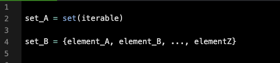

A set is an unordered collection of elements without any duplicates.
Sets are particularly valuable for performing logical operations such as finding the union, intersection, or difference between groups of elements. For instance, sets can be used to identify mutual friends on a social networking platform.
Basic Syntax

There are several ways to create a set, which include:
Using the built-in set() function and passing in an optional iterable parameter.
Hard-coding a set with dictionary-like syntax ({}) where each element is unique.